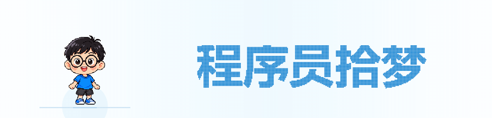

<!doctype html><html lang="zh-CN"><meta charset="utf-8"><meta name="viewport" content="width=device-width,initial-scale=1"><title>程序员拾梦 · 响指片头</title><style>body{margin:0;background:#eef7fc;color:#405a72;font:14px "Microsoft YaHei",sans-serif}main{max-width:1100px;margin:32px auto;padding:24px;background:#fff;border-radius:16px;box-shadow:0 8px 30px #b9d9e955}h1{font-size:21px}p{color:#7890a5}img{width:100%;display:block}button,a{font:inherit;background:#f1faff;color:#268dcc;border:1px solid #d7ecf8;padding:8px 12px;border-radius:7px;text-decoration:none;margin-right:7px;cursor:pointer}.phone{width:375px;max-width:100%;border:1px solid #e2edf5}nav{margin:20px 0}</style><main><h1>程序员拾梦 · 响指切换片头</h1><p>左侧像素人物 · 霓虹响指 · 眨眼 · 故障文字切换 · 7.2秒循环</p><nav><button onclick="document.getElementById('hero').src='intro.gif?'+Date.now()">播放</button><button onclick="document.getElementById('hero').src='snap.png?'+Date.now()">响指</button><button onclick="document.getElementById('hero').src='blink.png?'+Date.now()">眨眼</button><button onclick="document.getElementById('hero').src='after-snap.png?'+Date.now()">切换后</button><button onclick="document.getElementById('hero').src='tagline.png?'+Date.now()">副标题</button><a href="intro.gif" download>下载GIF</a><a href="intro.svg" download>下载SVG</a></nav><p>手机宽度预览</p><div class="phone"></div><p>本地预览，公众号后台和真机微信效果尚未验收。</p></main></html>